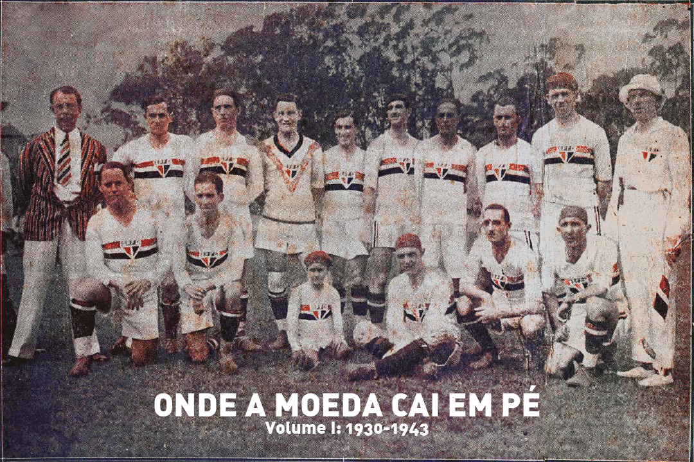
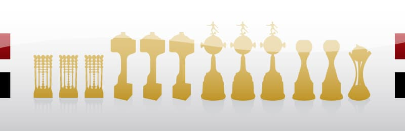
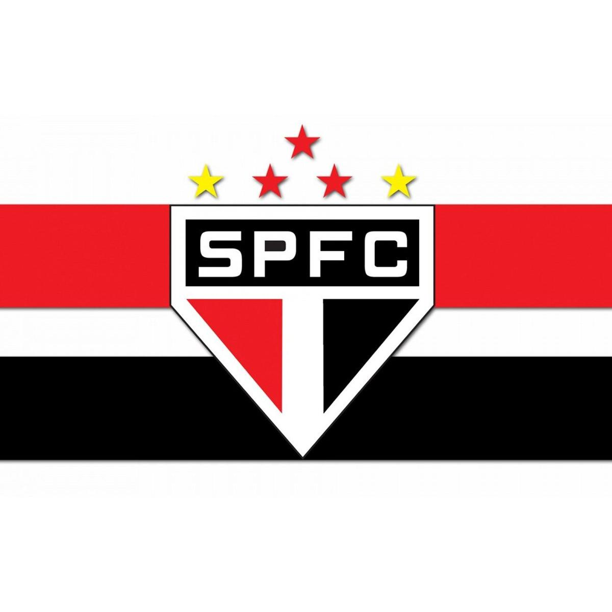
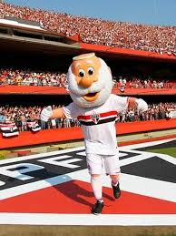

Como começou:

Texto sobre a fundação do clube...
História do clube SPFC

Texto sobre a fundação do clube...

Texto sobre conquistas do clube...

Texto sobre o escudo do clube...

Texto sobre o mascote...